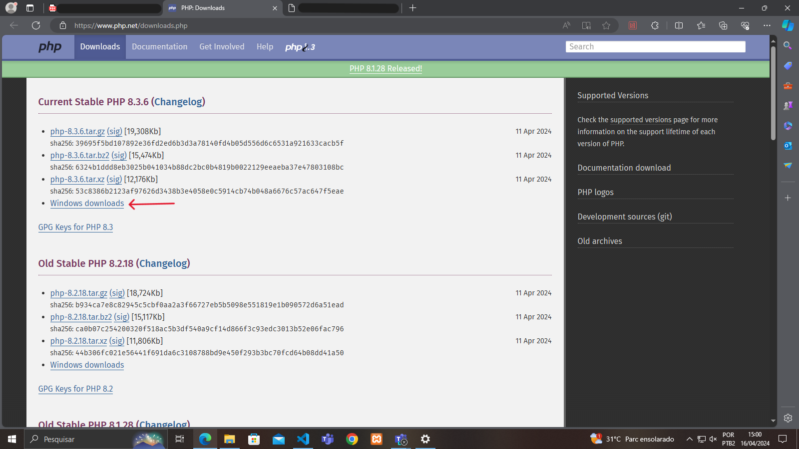

Para iniciar o download do xampp acesse o site oficial da plataforma: https://www.apachefriends.org/pt_br/index.html, na tela inicial haverá uma opção de "Baixar" em formato Windows, Linux e em OS X e como estou utilizando o S.O do Windows instalei a versão mais nova do Xampp em formato Windows!
Depois de clicar em "Baixar" você é redirecionado em outra tela
Instalando...
E então de next em todos os processos da instalação!
Logo após instalar o Xampp acesse o painel de controle do mesmo e de "start" nos módulos Apache e MySQL, então vá na barra de pesquisa e digite: localhost
Startando o Xampp...
Pesquise "localhost"...
Se quando pesquisado aparecer a tela inicial do Xampp, então está tudo certo para ser realizado!
Salve todos arquivos em "htdocs" e coloque o mesmo caminho no navegador depois de "localhost/".
Consequentemente coloque um arquivo no htdocs e pegue o caminho relativo para adicionar no localhost.
Depois na barra de navegação adicione localhost/aula019/index.html e então abrirá o html no server do Xampp.
Para instalar acesse o site: https://www.php.net/ e clique em downloads.

Logo após clique em zip para instalar o arquivo compactado.
Instalando...
Depois extraia o arquivo na pasta downloads.
Então renomei o arquivo para facilitar no cmd...
Então no cmd, vá para o local da pasta e para verificar se o php está rodando digite "php -v" para ver a versão, se aparecer na tela está tudo em ordem, vamos criar um arquivo PHP para abrir um server através do cmd e conseguirmos rodar esse doc PHP.
Crie um doc de texto.
Logo após digite um texto em PHP.
Então salve o conteúdo e mudeo para "teste.php".
Agora vamos para a pasta novamente no cmd e vamos criar um server através do comando "php -S localhost:80" e logo após abrir o server vamos na barra de navegação procurar nosso arquivo teste.
Na barra de navegação digite "localhost/teste.php"
Este foi o passo a passo de xampp desenvolvido por João Teixeira